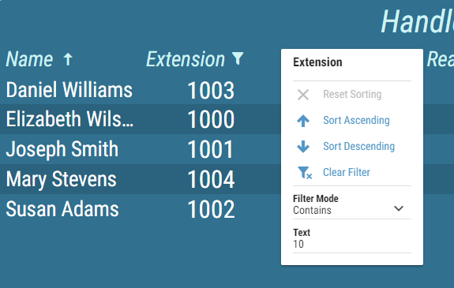

Real-Time Sorting and Filtering¶
Grid can be sorted and filtered in real-time by clicking on the that appears when the columns header is hovered on. When sorting in real-time, grid can be sorted only by one column at a time. Grid data can be filtered by selecting a filter mode, and a desired text. Every column with configured filter is marked with the icon.
The Real-time client sorting is stored in the browser’s local storage. This means that sorting and filtering will persist even after refreshing layout or whole DW. This also means that any changes made will not be transferred when using different users, browsers or machines.
Real-time sorting and filtering is not available while editing the layout. It is reapplied after exiting the edit mode.
Figure 1: Sorting and filtering in grid
Following modes are available for filtering:
- Equal To
Values that equal to defined text.
- Not Equal To
Values that do not equal to defined text.
- Greater Than
Available only if column contains numeric values
Values that are greater than defined value.
- Greater Than or Equal to
Available only if column contains numeric values
Values that are greater or equal the defined value.
- Less Than
Available only if column contains numeric values
Values that are less than defined value.
- Less Than or Equal to
Available only if column contains numeric values
Values that are less or equal the defined value.
- Between
Available only if column contains numeric values
Values that are in the range of values, defined by selecting the Min and Max value. The range can contain also the Min or Max value by choosing one or both of the options.
- Not Between
Available only if column contains numeric values
Values that are outside the range of values, defined by selecting the Min and Max value. The range can contain also the Min or Max value by choosing one or both of the options.
- Contains
Available only if column contains string values
Values that contain the defined text.
- Begins With
Available only if column contains string values
Values that begin with the defined text.
- Ends With
Available only if column contains string values
Values that end with the defined text.
- Matches RegEx
Available only if column contains string values
Value matches the Grid value in terms of a Javascript Regex match.
- In Set
The value matches one of the defined values.
- Set Values
The current value must be present in list of values.
- Not in Set
The value does not match any of the defined values.
- Set Values
The current value must not be present in list of values.
- Has Value
Values that are available.
- No Value
Values that are not available.